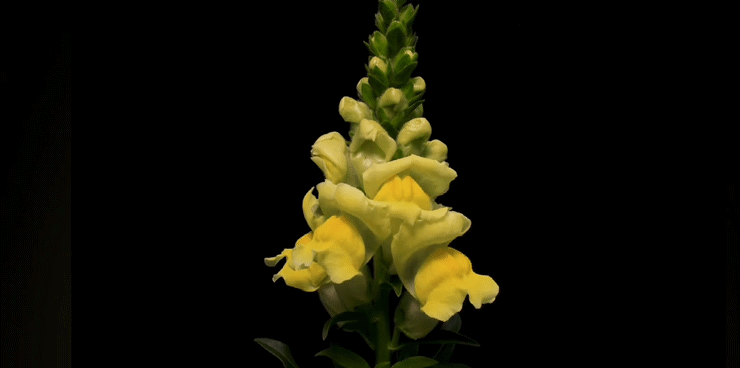
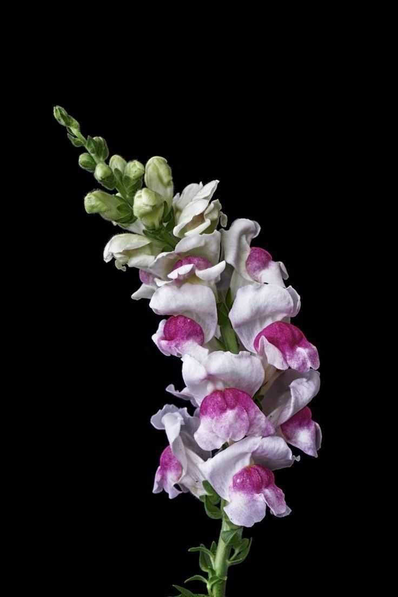
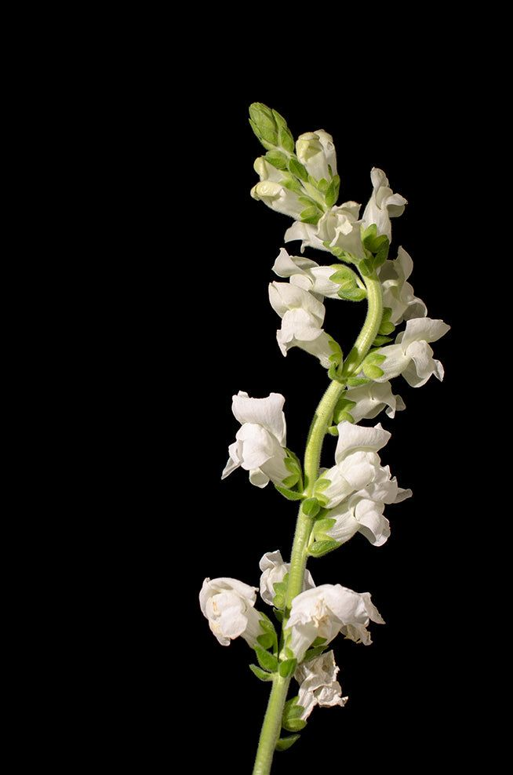
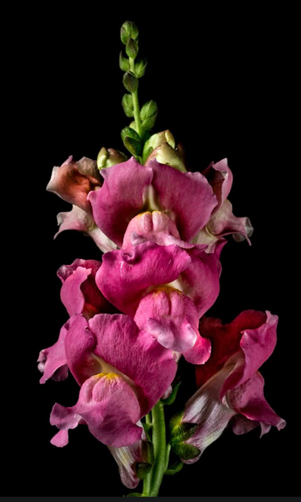

Antirrhinum majus (aka. Snapdragons) are playful and colorful flowers known for their tall spikes lined with blossoms that resemble tiny dragon mouths—hence their whimsical name. When gently squeezed, the "mouths" of the flowers open and close, a feature that delights children and gardeners alike. Blooming in a wide range of colors—from soft pastels to bold reds and yellows—snapdragons bring vibrant energy to gardens from spring through fall. They thrive in cooler temperatures and are often planted as annuals, though in milder climates, they may return year after year. Beyond their charm, snapdragons are also symbolic of strength and grace.


